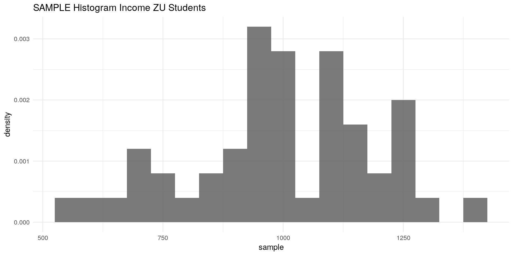
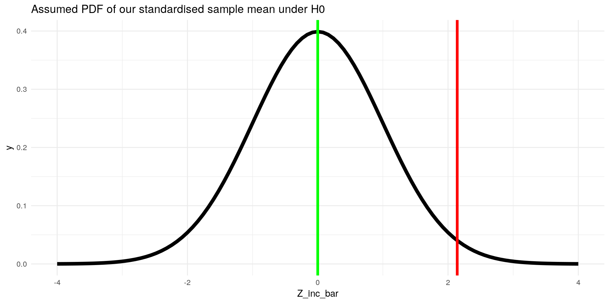
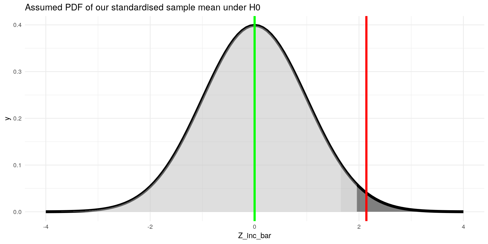

This section covers a fundamental part of inference: hypothesis testing.
Tests of hypotheses are frequently applied in econometrics, e.g. t-tests for OLS parameters or in tests for heteroscedasticity.
In this section we will:
In the previous part I assumed that we know the population. Actually – in practice – we don’t. We use hypothesis testing because we don’t much about our populations.
We actually don’t know:
In this scenario (which is the realistic scenario) we do the following:
Assume that the distribution of the population is normal (e.g. because it is reasonably from theory)
We take again our sample from a simulated population of ZU student income:
library(ggplot2)
library(tidyverse)
set.seed(11) # seed for reproducibility
n <- 1200
inc <- rnorm(n, mean = 1000, sd = 200)
ggplot() +
geom_histogram(aes(x = inc,
y = ..density..),binwidth = 60,alpha = 0.8) +
geom_density(aes(x = inc,
y = ..density..),col = "red",size = 2,alpha = 0.8) +
labs(title = "Income of ZU Students") +
theme_minimal()We draw a random sample with size 50 from our population:
set.seed(24)
sample_n <- 50
sample <- sample(x = inc, size = sample_n, replace = F)ggplot() +
geom_histogram(aes(x = sample,
y = ..density..),binwidth = 50,alpha = 0.8) +
labs(title = "SAMPLE Histogram Income ZU Students") +
theme_minimal()
Given the assumption that our population is distributed normally we:
\[ H_0 : \mu_{inc} < 940 \] Which leaves us with the alternative Hypothesis that the mean income is more or equal to \(940€\): \[ H_1: \mu_{inc} \geq 940 \]
mu_inc = 940
mu_inc## [1] 940inc_bar <- mean(sample)
inc_bar## [1] 998.3979S_inc_bar <- sqrt(var(sample)/(sample_n))
S_inc_bar## [1] 27.27298At this state we would expect our sample mean to be distributed like this:
ggplot(data = data.frame(X_bar = 850:1030), aes(x=X_bar)) +
stat_function(fun = dnorm, args = list(mean = mu_inc, sd = S_inc_bar), size = 2) +
geom_vline(xintercept = inc_bar, color = "red", size = 1.5) +
geom_vline(xintercept = mu_inc, color = "green", size = 1.5) +
labs(title = "Assumed PDF of our sample mean under H0") +
theme_minimal()Z_inc_bar <- (inc_bar - 940) / (S_inc_bar)
Z_inc_bar## [1] 2.141236Our standardised income is also called the test statistic.
ggplot(data = data.frame(Z_inc_bar = -4:4), aes(x=Z_inc_bar)) +
stat_function(fun = dnorm, args = list(mean = 0, sd = 1), size = 2) +
geom_vline(xintercept = Z_inc_bar, color = "red", size = 1.5) +
geom_vline(xintercept = 0, color = "green", size = 1.5) +
labs(title = "Assumed PDF of our standardised sample mean under H0") +
theme_minimal()
Look up the critical \(z-value\) for \(1-5\% = 95\%\), e.g. in this table.
\[ c = z_{95 \%} \approx 1.65 \]
Or in R:
qnorm(0.95)## [1] 1.644854Lets visualise this:
ggplot(data = data.frame(Z_inc_bar = -4:4), aes(x=Z_inc_bar)) +
stat_function(fun = dnorm, args = list(mean = 0, sd = 1), size = 2) +
stat_function(fun = dnorm, xlim = c(-4,1.65), geom = "area", fill = "grey", alpha=0.5) +
stat_function(fun = dnorm, xlim = c(1.65,4), geom = "area", fill = "black", alpha=0.5) +
geom_vline(xintercept = Z_inc_bar, color = "red", size = 1.5) +
geom_vline(xintercept = 0, color = "green", size = 1.5) +
labs(title = "Assumed PDF of our standardised sample mean under H0") +
theme_minimal()Check whether our standardised estimator \(Z_{\bar{inc}}\) is larger than our critical value \(c\).
Remember our \(H_0: \mu_{inc} < 940€\) and \(H_1: \mu_{inc} \geq 940€\). Lets test that in R:
Z_inc_bar >= qnorm(0.95)## [1] TRUEWe now can make the following statements:
Generally we can make the statement: “we can reject the null hypothesis that mean ZU student income is less than \(940€\) at a significance level of \(5\%\)”
What we did was only the right-sided hypothesis test.
We could also test other hypotheses:
So called p-values are often used and reported in statistical work. They indicate the highest level of significance at which we can reject the \(H_0\).
In our example, we could not only reject the \(H_0\) at the \(5\%\) level, but also at the \(2.5\%\) level:
ggplot(data = data.frame(Z_inc_bar = -4:4), aes(x=Z_inc_bar)) +
stat_function(fun = dnorm, args = list(mean = 0, sd = 1), size = 2) +
stat_function(fun = dnorm, xlim = c(-4,1.65), geom = "area", fill = "grey", alpha=0.5) +
stat_function(fun = dnorm, xlim = c(1.65,1.96), geom = "area", fill = "darkgrey", alpha=0.5) +
stat_function(fun = dnorm, xlim = c(1.96,4), geom = "area", fill = "black", alpha=0.5) +
geom_vline(xintercept = Z_inc_bar, color = "red", size = 1.5) +
geom_vline(xintercept = 0, color = "green", size = 1.5) +
labs(title = "Assumed PDF of our standardised sample mean under H0") +
theme_minimal()
But at most, we could reject it at the level of our test-statistic. So we just need to look up the corresponding value for \(Z_\bar{inc}\) in the z- table or with r:
1- pnorm(Z_inc_bar)## [1] 0.01612751This is our p-value. It tells us that we can reject the \(H_0\) at most at a significance level of \(\approx 1.6 \%\).
In R we can conduct this procedure with the t.test function:
t.test(sample, mu = 940, alternative = "greater")##
## One Sample t-test
##
## data: sample
## t = 2.1412, df = 49, p-value = 0.01863
## alternative hypothesis: true mean is greater than 940
## 95 percent confidence interval:
## 952.6733 Inf
## sample estimates:
## mean of x
## 998.3979The different p-value is due to the fact that t.test used the Students t-distribution instead of the standard normal distribution. We used the standard normal for ease of explanation, but actually our test statistic is distributed in the Student-t way.
If we calculate our p-value for the Student-t distribution, we get the same result:
1- pt(Z_inc_bar, 49) # degrees of freedom = sample size -1 ## [1] 0.01862729For large samples (\(n > 120\)) the t-distribution and the standard normal distribution are almost equivalent.